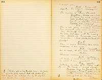

Enter Broderick R.U.E.Broderick
The suspicion against Ah Sin wouldn't stick. Why? Well, I suppose they want higher game. Very well. It's York or me, now; and the best man wins. I've got them started on his trail, and everything seems to promise pretty well. But what of it? To hang York will only give me safety. Nothing more. I am afraid nothing more. There is that on my soul that will never wash--
Enter Ah SinAh Sin
(interrupting with a scream) Wash! Me washee-washee. You want wash?
Broderick
(aside) Well, safety is something! I wish the evidence were a trifle stronger. I've got an idea--in the egg--and ready to hand, here is one of the devil's own chickens to hatch it. (X.L. aloud) Here, Ah Sin, you remember my buying a certain jacket of you once?
Ah Sin
Yes, me lemember.
Broderick
Do you think you could furnish me a jacket of York's in the same condition that one was?
(aside--X.L.) What Mellican man up to, hey?
Broderick
You don't answer. (X.R.)
Ah Sin
(thoughtfully) Me got plenty jacket to wash fo' York, but no got any blood on 'em.
Broderick
Put it on, then! This is no time for mincing speeches. Come--quick--I'll give you three hundred dollars.
Ah Sin
(hesitating) Heap money--heap money--but--
Broderick
Five hundred! Is it a bargain?
Ah Sin
All litee, John. Me do it.
Broderick
(shakes hands. Ah Sin surreptitiously wipes his hand on blouse, with the faintest perceptible show of disgust, which Brod. does not see.) Good Chinaman! You shan't repent this. Now prepare that jacket at once--bring it to me in your carpet sack quick as you possibly can. Go--go!
Ah Sin
(going) All litee John. (aside) Me quit washee-washee. Too slow. No pay. Me sellee bloody jackee all time. How me catchee blood--me stealee chicken! (exits)
Enter Ferguson, Boston and 1st Miner R.U.E.Broderick
You're too early boys. I think you must be on the wrong track, anyway.
Boston
I bet we ain't. York's the man! The minute you dropped that remark about him, I said so--didn't I boys?
Ferguson
Yes; and didn't I?
1st Miner
And I too?
Broderick
Well, I'm sorry now, I said anything if it has turned suspicion upon poor York. I never should have been acute enough to see what an ugly look that circumstance had.
Boston
I saw it in a minute!
Ferguson
So did I.
Broderick
I had supposed you were founding your suspicions upon some conduct of his when you wanted to question Ah Sin.
Boston
Oh, no!
1st Miner
No, nothing suspicious there.
Broderick
I thought maybe his taking so much pains to shield the Chinaman and get him away--
Ferguson
Why here! I'd forgotten that! Don't
Boston
Certainly! Remember it perfectly well, now.
1st Miner
Yes indeedy. Come to put this and that together--
Ferguson
(interrupting) It looks worse and worse for Mr. Y.
Boston
Come along, boys, my mind's made up. We'll just go for him.
1st Miner
He's around here somewhere. (going)
Broderick
Now boys--
Ferguson
(interrupting) 'Taint any use, Broderick. He's the man--we ain't agoing to be argued out of it.
Exit all R.U.E. Broderick rubbing his hands with satisfaction.Mrs. Tempest
Enter Mrs. Tempest from L.2.E.
Dear, dear me, what a muddle I'm getting into, representing another person, good heavens what will I do when all is discovered? Well, Shirley drove me into the masquerade, and when the time comes to remove the masks she must stand the brunt of it. (goes to flower stand L. Music--enter Ah Sin with dishes which he places on stump of tree, busies himself at table--Mrs. T. observing him) So it seems Mr. York has made another addition to his domestic menagerie--I
Ah Sin
Tablecloth all same likee sheet. (gets tablecloth and places in centre of table)
Mrs. Tempest
Come let me teach you. (she tries to spread it, it flies out of her hands and lights beyond the table on the floor--Ah Sin exactly imitates this performance and grins at his success.--aside) Well, he has imitated that too. Looks as
Ah Sin
(pats tablecloth) Allee same like a feather bed.
Mrs. Tempest
Do it that way, next time--Set your plates now. (he sets a pile in the middle of the table and stands back) Oh, you innocent, is that all! You provoking--but I won't scold you. (seizing a plate) Here poor, neglected thing, this is the way to set a table. (she flies around nettled, in spite of herself, sets one plate after another too near the edge--they fall off) There-- (desisting) I won't lose my temper. (he imitates her hurry and zeal--touches plate after plate to table then slams it on the floor--then stands back pleased) Oh, is there nothing in you but imitation?
Ah Sin
No hab got a cent.
Mrs. Tempest
(setting the plates right for his instruction--aside) Poor dumb animal, with his tail on top of his head instead of where it ought to be. (aloud to Ah Sin) Surely you can't have had a very vast experience as a servant? (Ah Sin proceeds with his work.)
Ah Sin
Me velly good servant for Plunkee--Plunkee he A. No. 1. plopper man. You sabee Plunkee.
Mrs. Tempest
(aside) Well, I must keep up this imposture with everybody. (aloud) Alas, poor lost dear, he was my husband.
Ah Sin
Too bad he go die--makee you heap sorry--Plunkee got nother wife.
Mrs. Tempest
(aside) What shall I say now? Of course, he had another wife--his real wife--this Chinaman suspects. (aloud) Ah, I am
Ah Sin
Velly good man, Plunkee, allee same like a Bligam Young.
Mrs. Tempest
Well, go and get the things ready.
Ah Sin
You got nufee?
Mrs. Tempest
Yes, quite enough--go and get the things ready. (comic exit of Ah Sin in house L.) It is time that that giddy girl of mine, this fraudulent Mistress Plunkett, was back from her ramble--I wonder what she really thinks of our Mr. York? York is evidently smitten, but she--oh dear, I wish it were all over and the Judge here--How stupid in him to tell her what he wanted her to do.--Ah, yes--here they are coming down the road together, and actually pulling away from each other like a team going down hill. I wonder if the Judge's plan is going down hill too? Well, I shall only be in the way here. (exit into house)
Enter R.2.E. distantly to embarrassedly 1st. York and 2d. Miss T.--York beats the bushes with his cane--Miss T. pulls a flower to pieces.York
(L.C. awkwardly) Well--we--are here!
Miss Tempest
(R.C. mischievously) Had you any idea that a walk in this direction would bring us anywhere else?
(During the following speech, Ah Sin enters, and by the time York gets to "nature and beauty" and turnsYorkhe finds himself face to face with the grinning Chinaman and utters an exclamation of vexation and disgust. Ah Sin proceeds with his duties but is always in the way or between the lovers at critical places.)
(aside) Can she be laughing at me? (aloud) No, I only meant--That is--Miss Plunkett--I confess I had thought--I mean I had hoped that in our little ramble, through these calm sedate woods--that in our mutual admiration of nature and beauty, that in our sympathy with the good and the true, we might perhaps have--drawn--a--little nearer to--
Miss Tempest
To luncheon! (X.R.) We have! The table is already set. (to Ah Sin--taking up cruet) No oil--of course something would be wrong! Go and fill it! (Ah Sin exits.)
York
(aside) She is laughing at me! (aloud) I--beg your pardon--Miss Plunkett.
Miss Tempest
(going to table and examining it) Excuse me a moment, but this Chinaman's glittering ignorance keeps one on the rack all the time, he needs so much watching. (to Ah Sin, who has returned with cruet.) Ah--you've got the oil.
Ah Sin
Yes, missee.
Very well. But I can't trust you. (smells) Pah! it's kerosene!
Ah Sin
Him very good oil.
Miss Tempest
Now don't you know any better than to put kerosene in a castor? Take it away and fill a clean cruet. (Ah Sin, going, tastes the kerosene and exits with hot bowels.)
Ah Sin
Me sabbee, clean cluet.
York
(affectedly--aside sadly) She is not only enjoying my discomfiture but is even laughing at my servants. (aloud) But you will admit, Miss Plunkett, that these little infelicities of our mountain life add a zest to--to--is in fact the--
Miss Tempest
(examining table) Salt!
York
(aside) Confound it. (aloud) I meant, that I owe perhaps to this very misfortune the felicity of being served by the fairest of hands--of seeing you--
Miss Tempest
(at table) Sugar!
York
(aside) This is too much! (aloud--proudly) Miss Plunkett, you have checked me twice in an avowal that--
Miss Tempest
(to Ah Sin, who brings fresh cruet straight to her with
Ah Sin
Oh, him all litee now!
Miss Tempest
Well, you are a good boy. Now don't ever forget that there's only one kind of oil that's proper for a castor. (smells) Ugh! Why, what's this?
Ah Sin
(innocently) Castor oil. (goes off L.)
Miss Tempest
(flings the cruet away--turns and perceiving that York is going R.) What! You're not going to leave me here alone. Is this your gratitude for my services as housekeeper? (coming towards him with extended hands, archly.)
York
(gravely) I was going, Miss Plunkett. I was turning from you that I might better hide in my own breast a secret I had no right to disclose. I would have left you lest I should make an avowal that I knew was premature, that I feared was hopeless! I love you, Miss Plunkett! (she starts--he seizes her hand.) If for the last few hours I have seemed strange and awkward in your presence, it was because I had this secret in my breast; because I learned too late that what I had deemed my duty to my dead friend--
Miss Tempest
(starting) Your dead friend!
Your late father, Miss.
Miss Tempest
My late father! (aside) Oh yes, 24 hours late; dear me. If he were only here.
York
That my duty to your father--to your father's daughter, was not duty, but love! I know that honor, duty, even love itself, demanded that you should have known, long before this that you were not receiving the hospitality of a host, but the devotion of a lover.
Miss Tempest
(agitatedly) You forget yourself, Mr. York. (aside) Dear me, I'm afraid I'm forgetting myself too.
York
No, Miss Plunkett. It is I who am remembering myself now. It is I, who am recalling the man who loved you before he ever saw your face, who had long before you knew him, dwelt upon your photograph, pictured you to his fancy--loved you as an ideal.
Miss Tempest
(aside) Why, my goodness, that's the way I've been going on about his picture!
York
And yet, knowing this, I brought you here, a helpless, fatherless girl--only to take advantage of your gratitude, to press my foolish suit.
Pray--Release my hand, Mr. York.
York
(sadly) As you will.
Miss Tempest
(embarrassedly) I have--kept--from you a secret! 2 years ago, at the risk of your own life, you saved a woman from instant death, on the banks of the Stanislaus River.
York
(carelessly) Yes, I remember--something of the kind.
Miss Tempest
I was that woman! (perceiving York start--aside) What have I said! I'm going too far. (aloud) --that woman's niece--you understand--she was my aunt.
York
(confusedly) Oh, that woman, she was your aunt?
Miss Tempest
Yes, my favorite aunt, a woman I loved as myself. (aside) Thank heaven, that's over. What shall I say! (aloud) Hear me, Mr. York, by that heroic act you purchased the right--the only right you have of making me listen to you here.
York
(stupidly) That woman your aunt?
Miss Tempest
Yes, certainly. And if you'd really loved me--my aunt--I--mean,--I--mean--if you hadn't been so stupid
York
Yes, but how could I know the inestimable value of that old woman? (aloud) Then I am to understand, Miss Plunkett--
Miss Tempest
(hurriedly) Oh please, you're to understand nothing. Only go now and come back in half an hour, and I'll tell you all. Go, quick!
York
(going) Then, in half an hour I'm to come back.
Miss Tempest
(quickly) To luncheon.
York
(returning) To luncheon--Au revoir.
Miss Tempest
(raising her voice) Mr. York!
York
Caroline!
Miss Tempest
Please don't call me Caroline.
York
I know I should have said Miss Plunkett; pardon me.
Miss Tempest
No, no--call me Shirley; it's a pet name, my dear old aunt's pet name, that's all. Call me that--for--for--my aunt's sake!
York
Shirley, dearest, bless you! (exit into house R.)
(excitedly) What have I done? What have I said? Not content with foisting a wife and daughter upon him, I've added an aunt! An aunt! Oh, heavens, this is too much. Oh, I see it all--it's in the atmosphere, it's in the name! It's that dreadful old story-teller Plunkett haunting the world again in me and through me. Why, I think I couldn't tell the truth if I died for it! (Xes excitedly and goes up to summer house--more seriously) In half an hour he'll return--what shall I say? I'll tell him all. (pause) No, I won't tell him all. Umph! That photograph is mine--not hers. It's me that he loves, not Miss Plunkett. (goes up to summer house and throws herself on a settee--up stage R.H.)
Enter Mrs. and Miss Plunkett, R.U.E.Mrs. Plunkett
No, I won't hear another word! Don't talk to me, Caroline Anastasia Plunkett, (Miss T. starts at mention of that name.) on such frivolous and worldly topics when every liniment of the scene around us fetches back your poor lost father. Mind, I don't object to your making a match with this rich worldly man if you want to, though I wouldn't marry him though he was as rich as Creosote himself--only don't harrass me with it when I'm soaking my soul in memories of the departed.
(R.) Oh yes, Ma, why didn't you soak your soul yesterday? Why didn't you soak your soul last night in your memories of the departed? Sour grapes! It's because you were trying your best to get him yourself. There, now!
Mrs. Plunkett
(R.) My child! Remember I am your mother. Such language to me is not respectable--it is even irrelevant.
Miss Plunkett
Well, I can't help it if it is irreverent, it's truth. (tearfully) And the minute he gives you the cold shoulder you turn on him and talk harsh about him. I think it's just outrageous. There, now.
Mrs. Plunkett
(with dignity) I am sorry if my simple effeminate attentions have seemed significant to him and to you, for I intended them to be, like all my conduct entirely insignificant. It more becomes my afflicted condition to consecrate myself to his sacred memory who is gone. (tearfully) Peace to his ashes--poor thing!--But as I said before, you may go on and make this match if you think best.
Miss Plunkett
Well, I do think best, Ma. And he does if actions go for anything. A man don't moon around a woman
Mrs. Plunkett
But Caroline, you haven't known him 24 hours yet. This is all premature.
Miss Plunkett
Premature! He must be worth a quarter of a million.
Mrs. Plunkett
Well, I won't make any more objections. One son-in-law will do as well as another, I reckon. I must try to be a good mother-in-law to him. The duties of a mother-in-law and the duties of a wife are about the same thing I judge--6 of one and half a dozen of the other. With the experience I've had as a wife I reckon that when I'm needed on deck I'll be no mere huckleberry of a mother-in-law.
Miss T. coming out of the summer house quietly--unseen by the Plunketts.Miss Tempest
(aside) 24 hours! These are the people he expected, the people we have anticipated. I must end all this here. (advancing L. aloud) I beg your pardon ladies, but I believe I stand in the presence of Mrs. and Miss Plunkett, the wife and daughter of the late Mr. Plunkett of this place?
(hurrying to her mother's side) Oh gracious, this is one of those stuck-up San Francisco quality. Look at her dress, it must have cost a bushel of money.
Mrs. Plunkett
(to her daughter) Hush! It's the eclat of San Francisco.
Miss Plunkett
(sotto voice) 'Sh! Ma, you mean the elight.
Mrs. Plunkett
(continuing) Yes, miss, you see there the orphan child and here the stricken relic of the late deceased. Two lonely, friendless, dissolute women.
Miss Tempest
My name is Shirley Tempest.
Mrs. Plunkett
What! You don't mean it! Not the daughter of Judge Tempest of San Francisco, that's got oceans and oceans of money, the great Pacific slope milliner, as they call him--
Miss Tempest
(aside to Mrs. P.) Daughter of the Pacific slope millionaire! My!
Mrs. Plunkett
(effusively) I'm proud to know you. (curtseying)
Miss Tempest
Perhaps not. If you will retain your kindness for a moment, I may show you that I have unintentionally done you--and especially that young lady--a great wrong.
Mrs. Plunkett
Oh, don't mention it.
Miss Tempest
When my mother and myself arrived
Mrs. Plunkett
(curtseying) Oh, don't mention it.
Miss Tempest
That gentleman, I have every reason to believe, mistook us for you, and I am ashamed to say that I encouraged his blunder, and out of sheer frivolity, prevailed upon my mother to assist me in sharing his hospitality as Mrs. and Miss Plunkett. I should not have the courage to confess this foolish freak, but that it enables me to assure you from my own personal knowledge, of that gentleman's deep attachment to Miss Plunkett.
Miss Tempest
(aside) I don't like this. So he's been receiving somebody else.
Miss Tempest
I expect him here in half an hour. I beg you will bear me company until I shall disclose in your presence my foolish imposition, and restore you to the protection of Mr. York your admirer.
Mrs. and Miss Plunkett
York!
Miss Plunkett
He my admirer, I reckon not!
May I ask of whom you were speaking just now?
Mrs. Plunkett
Of Mr. Silas Broderick our hospitable hostage.
Miss Tempest
(aside) I begin to see.
Miss Plunkett
(brindling X.L.) You can tell Mr. York we wouldn't take his hospitality, with such a suspicion resting against him. (aside to Mrs. P.) The idea of his mistaking that starched up thing for me!
Mrs. Plunkett
(aside to Miss P.) Hush! (aloud) No m'am, we--we couldn't accept no attentions from Mr. York--at present.
Miss Tempest
Well come, let us at least be friends, (extending hand) and let me introduce you to your laggard friend. (Plunketts show signs of hesitation) Stay. (laughing) I have an idea; if I have personated you in the (X. to C.) sympathies of this man, it is only fair that you should personate me. Let me beg you to accept my hospitality to-day at luncheon, and you shall meet this sluggish friend, not as Miss Plunkett, but as Miss Tempest. He will show his loyalty to you, I'll be bound. (aside) If he does--I'll hate him.
Miss Plunkett
(half-pleased--half annoyed) I'd--like to, just to see him. Mr. Broderick will not be here.
Mrs. Plunkett
But what am I to be?
Miss Tempest
(taking her arm) You shall be my mother--but first let me introduce her to you. Come, Miss Plunkett, you must keep us company, and help me in coaxing our mothers to stand by us! (the ladies go up stage L. and off.)
Enter Ah Sin--he carries a dish or something and puts it on table,Mrs. Tempest
then employs himself about table.
Enter ladies as before with Mrs. Tempest as Mrs. Plunkett
Do you enjoy the mountain air, Mrs. Tempest?
Ah Sin
What! Missee Tempee!
Mrs. Tempest
I am sure you do, Miss Tempest; the roses in your cheeks speak for you.
Ah Sin
Plunkee one day--Tempee next--No sabbee-- Mellican man all mix upee.
Mrs. Plunkett
(with studied dignity and aristocratic grace and composure) I always enjoy the mountain air, Mrs. Plunkett, because the temperature ain't so variegated as what it is down on the lower latitudes. The more equinocturnal the temperature is, the better it suits my constitution and by-laws.
(as Miss T.) Mountain air suits me. There's inspiration in it. I can feel the poetry rumbling in my soul all the time.
Miss Tempest
I feel him coming! And, oh dear, I can't discover any pain about it, either.
Mrs. Tempest
(looking off--looking at watch.) I see Mr. York, has that peculiar masculine virtue, promptness. He is here at the exact moment appointed.
Enter York from house R.1.E.York
(aside) Some strangers apparently.
Mrs. Tempest
Mr. York, I and my daughter have had the good fortune to secure a most valuable addition to our luncheon party. Let me present you to Mrs. Tempest of San Francisco. (York shows great surprise, but instantly recovers himself and bows with great deference.) Also to Miss Tempest. (he bows again)
York
(aside) It isn't possible that these people--are-- (aloud to the elder lady) Am I right in my inference that I have at last the great pleasure of meeting the wife and daughter of my old friend Judge Tempest?
Mrs. Plunkett
(in her new high toned way--for she is conspicuously trying to be the aristocratic personage she is representing) I am mutually
York
(befogged.) Beg pardon?--My hearing seems defective to-day--I am not sure that I exactly--understood--that--is--I--would you mind--
Mrs. Plunkett
Saying it over? (smiling--rather flattered) I was remarking that I was mutually glad to say you were right, sir; (York listening with painful interest) and glad to say too, that the mutuality of your pleasure in meeting us, could not be more mutual the mutualness of our pleasure in meeting you. (pause)
York
(perfectly blank face and stupefied manner) Thanks madam, many thanks. (aside) Am I in my right mind?
Mrs. Tempest
I must explain that we sent to invite Mr. Broderick to join our luncheon party, but he was not in. (York bows)
Miss Plunkett
(pensively) He wouldn't enjoy society and cheerfulness to-day, anyway. He seems sad, and low, and sighs considerable. I think it's his--his--
Miss Tempest
His mind!--perhaps!
Lor no--his liver!
Mrs. Plunkett
How that makes my mouth water. You may talk about your sardines, and your ice cream and your quails on trust, and blankmange, and your pates de foy grass, and your canary birds stuffed with onions-- (dumbshow of quickly concealed disgust on the part of York and the real Tempests.) and all the other indelicacies that we, that have got money can indulge in; but as for me, give me liver!
Miss Plunkett
(impressively) That's good enough doctrine for me.
Mrs. Tempest
Ah Sin is a little slow with the fruit; I must hurry him a little.
Mrs. Plunkett
There's nothing like taking time by the fetlock.
Enter Ah Sin with dish of fruit--trips and falls. Mrs. P. screams. Comic business. Exit C.)Mrs. Plunkett
My goodness, what has the poor heathen done?
Ah Sin
(to Mrs. P.) You likee him--You likee him you pick him. (exits)
Miss Tempest
Don't mind him--don't be afraid, dear Mrs. Tempest. Poor Ah Sin is harmless--only a little ignorant and awkward-- (Mrs. T. and York show great sympathy) My dear madam, take some wine, it
Mrs. Plunkett
Oh dear me, the thought of anyone being injured or killed reminds me of-- (hesitating--she is nudged by her daughter's elbow.) I had a poor dear friend, whose brief sweet life was a poem to all that knew him--more than that--it was a sermon--just a rounded complete and beautiful sermon, clear through from the doxology to the malediction. But please let us change the subject--I can't think of him without going into ecstasies of sensibility, perfect ruptures of emotion.
Miss Plunkett
Don't you be alarmed about her. (this to the company) She'll soon come out of this! Pa says she's a little too sentimental for her age, and I reckon it's so, too. Pa tries to make me out so too--but he is mistaken. Whatever I am, I'm not one of the sappy sentimental sort. Excuse me. I'm no gumdrop.
York
(aside) And this chambermaid is the divine Miss Tempest! Gumdrop! Ugh! This state of things is becoming intolerable. I must contrive a change of some sort. (aloud) It is my pleasant duty to make your time pass as little irksome as I can, ladies, and if there is any diversion that I can offer--
(interrupting) That's it! Let's have a dance!--let's have a good old rattling breakdown.
The real Mrs. Plunkett
Laws, child, dance indeed! There ain't enough men pardners.
York
(interrupting)--Allow me--I think I can offer a novelty. My Chinaman is always meddling around the shows and picking up something or other, and he mimics everything he sees there.
Miss Plunkett
Oh, call him in!
Mrs. Plunkett
That is the thing.
Mrs. and Miss Tempest
Oh, excellent!
York
Ah Sin!
Ah Sin
(outside) Me coming.
York
He will be a little diffident, maybe, but-- (Ah Sin enters) Ah Sin, these ladies want to see what you picked when you used to go to the theatres in San Francisco. (Ah Sin smiles largely and exits--York exchanges wondering looks with ladies) Why--what does he mean by going off? Ah, here he comes again. (enter Ah Sin with carpet sack--opens smilingly and takes out gorgeous costume,
Ah Sin
Me pickee him up at theatre! (general laugh)
York
Oh, you are too literal by half--
Ah Sin
Too little--Mellican man say I fat enough to kill.
York
--too literal. Now the ladies would like to hear you do some of the things you've seen at the shows.
Ah Sin
(shyly) Me no kin do such ting--too muchee people here.
York
(calls him--whispers in ear--only the word "cash" heard)
Ah Sin
Me singee littee songee. (Ah Sin sings song--)
Music--Enter Broderick, Ferguson and miners L.U.E.Ferguson
The following dialogue very hurriedly and work up to climax.
(advancing) Beg pardon ladies, but we don't want to intrude here. We're only looking for this gentleman, Mr. Henry York.
York
(quietly looking at Ferg.) Very well, sir; your business?
Ferguson
I don't want to--to--
York
(proudly) You can have no business with me that is not proper for ladies' ears. Go on, sir.
Ferguson
I am content then. We are here

York
(rising with dignity) For what? (coming C.)
Ferguson
The murder of Abner Plunkett. (sensation--ladies rise--Miss T. throws her arms around York protectingly. Mrs. P. faints. Miss P. is startled. Mrs. T. stupefied and indignant.)
York
(to Miss T. soothingly) This is all some dreadful blunder. One moment will clear it away--Why Broderick here, can explain! He was last seen with the missing man. Speak up, Broderick, man, you remember! (Broderick shakes his head solemnly.)
Miss Tempest
There is some treachery here, some conspiracy I am sure.
York
(amazedly) But at least, Ah Sin here, knows that I--
Ah Sin
Chinaman evidence no goodee.
York
(excitedly) At least, I must know the authority by which I am arrested?
Ferguson
(gravely) Certainly; by order of the highest authority in the land--Judge Lynch!
(Ferguson lays his hand on York's shoulder--Miss T. falls upon her mother's bosom--comic business--falling back for Ah Sin. Ah Sin sits on Mrs. Plunkett's knee--she pushes him off and he falls against Brod. who pushes him back to Mrs. P who catches him by the pig tail and pounds him with fan.) Tableau